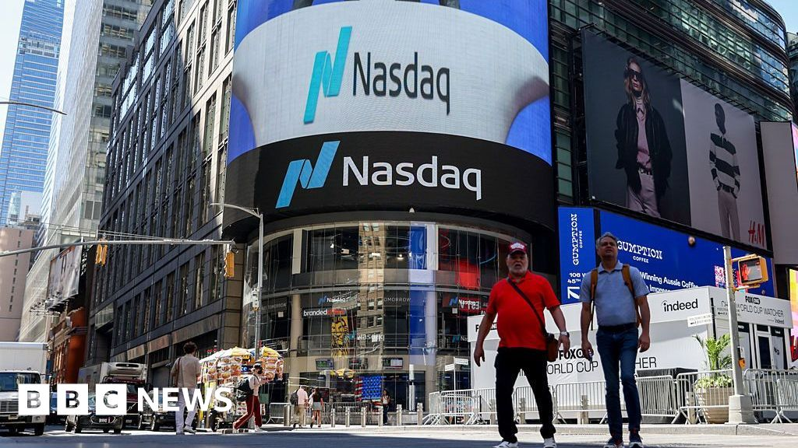
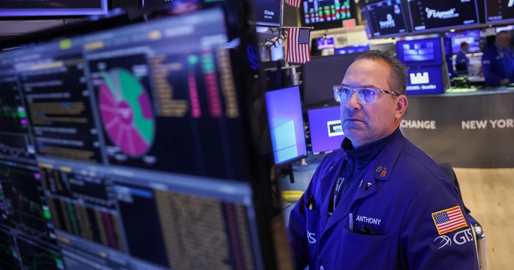

01 / EXECUTIVE BRIEF
What matters now
02 / SECTOR INTELLIGENCE
Signals across the board
Technology & AI Infrastructure
Severe multiple de-rating triggered by high AI infrastructure spend, Amazon/Intel results, and Alphabet historical decline.
Implication: Capital spending scrutiny intensifies; hardware and storage manufacturers face valuation de-coupling from near-term beats.
Digital Assets & FinTech
Systemic crisis triggered by the $6.3B Binance exploit and Polymarket security breach, prompting immediate ETF outflows.
Implication: Stricter institutional custody requirements and looming regulatory restrictions threaten centralized exchange transaction volumes.
Energy & Natural Resources
Robust profitability across integrated majors supported by firm crude pricing and tightened Russian diesel export constraints.
Implication: Accelerating shareholder capital returns via dividends and buybacks, cementing energy as a premier stagflation hedge.
Consumer Discretionary & Retail
Consumer trade-down accelerating toward cheaper vehicles alongside rapid consolidation in gig-economy food/grocery platforms.
Implication: Margin preservation favors mega-scale consolidators (DASH/CART) and proven operational turnaround stories (SBUX).
Financials & Fixed Income
Bipartisan political pressure on credit card APR caps; sovereign debt pressures mount in Europe as France faces rating downgrade.
Implication: Net interest margin compression risk for card lenders; flight to safe, high-yielding sovereign and inflation-linked debt.
03 / RISK ASSESSMENT
Known downside
AI Bubble Deflation & Multi-Year Capex Overhang
Underweight high-multiple mega-cap tech; pivot into software and hardware with non-AI organic cash flows.
Crypto Contagion and Institutional Exit Post-Binance Exploit
Redeem spot crypto ETF exposures; maintain strict custody segregation and avoid centralized trading venues.
US Political Intervention on Consumer Credit & AI Regulation
Trim exposure to high-APR consumer credit issuers and politically vulnerable AI infrastructure firms.
04 / POSITIONING
Portfolio responses
Opportunities
Overweight Integrated Global Energy Equities
Blowout Q3 profits, strong capital return programs, and structural supply tightening from Russian diesel export curbs.
Accumulate DoorDash on Strategic Grocery Expansion
$17B Instacart acquisition provides dominant market share, eliminating rival marketing spend and creating logistics synergies.
Buy Operational Inflection in Large-Cap Dining
Leadership transition turnaround confirmed at Starbucks with shift back to organic comp growth.
Lock In Guaranteed Yield via US Series I Savings Bonds
Treasury Department 5.51% annualized rate offers risk-free capital preservation amidst equity market turmoil.
Defensive
Trim Mega-Cap Tech and Storage Hardware Holdings
Alphabet $500B crash and hardware de-ratings signal persistent multiple contraction as AI capex yields are reassessed.
Reduce Exposure to Spot Crypto ETFs and Digital Asset Exchanges
Historic $6.3B Binance hack sparks rapid ETF redemptions and heightens regulatory clampdown risks.
Underweight Consumer Lending and Card Issuers
Bipartisan midterm legislative momentum to cap credit card interest rates threatens revenue models.
05 / OUTLOOK
The road ahead
1—3 MONTHS
Turbulent and risk-off over 1-3 months as markets digest the AI capex reset, crypto regulatory shockwaves, and US midterm election volatility.
6—12 MONTHS
Selectively positive over 6-12 months once tech multiples normalize, delivery and retail synergies materialize, and energy cash flows provide stability.
Key catalysts
Watch list
06 / SOURCE INTELLIGENCE
Reporting behind the view

DoorDash to acquire Instacart for $17 billion, creating delivery giant
VIEW STORY ↗
ExxonMobil and Chevron report blowout profits as Trump touts benefits of high oil prices - NBC News
VIEW STORY ↗ Dynamic visual
Dynamic visualStocks Slump as Wall Street Gets AI Wake-Up Call: Markets Wrap
VIEW STORY ↗Tech Stocks Plummet; Hackers Steal Over $6B in Cryptocurrency
VIEW STORY ↗
US tech stocks see sharp falls over AI cost fears - BBC
VIEW STORY ↗